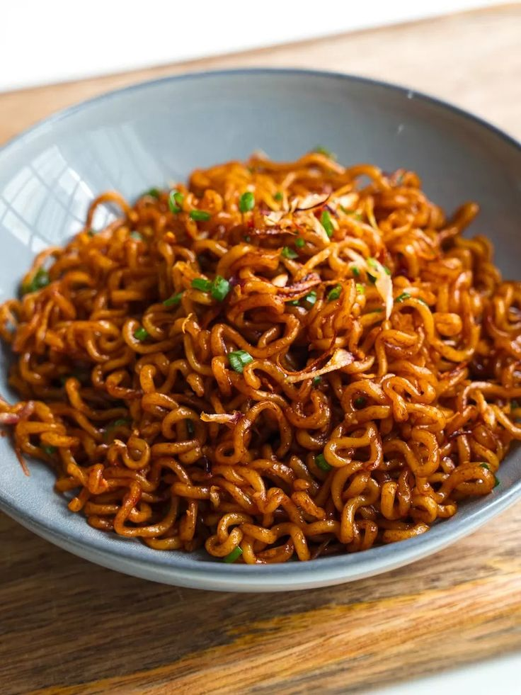

Indomie's Recipe

Making instant noodles is pretty easy. You should have a pan for more flavor, but it's fine if you want to use
a bot. The ingredients you need are included in the bag already. They are:
- The noodles
- The spices
- The oil
The steps are very simple. Here's what you should cook:
- Get a Pot or a Pan (my personal option.)
- Boil water in it, then add the oil,lastly the noodles
- It's ready after 2-4 minutes. Add the spices immediately or dry the noodles if you wish
Enjoy your meal!!